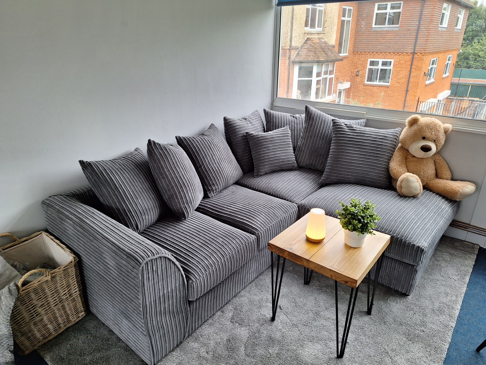
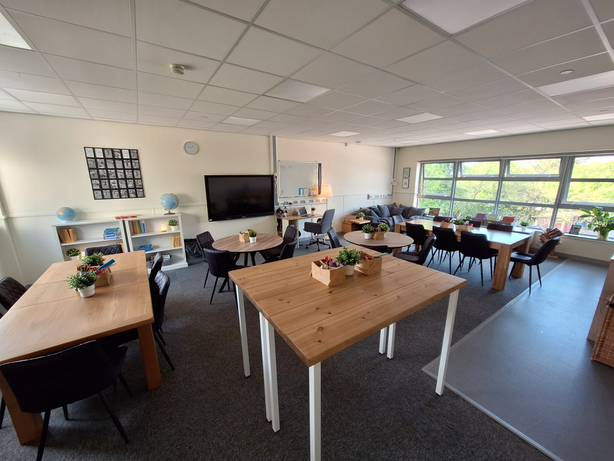
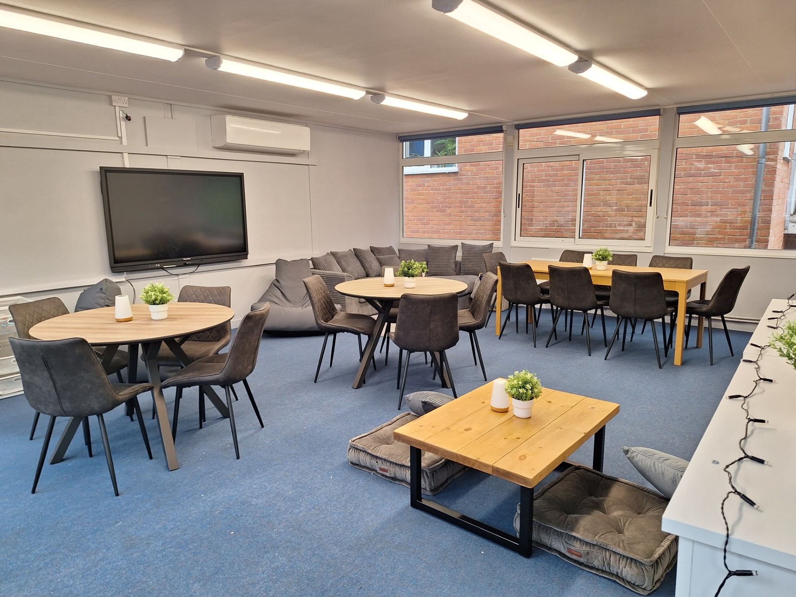

Intentional spaces where all children feel calm, safe and ready to learn. Not specialist provision, but everyday design that supports every pupil.
Therapeutic classrooms are not specialist spaces for a small number of pupils. They are environments designed so that all children can regulate, focus and thrive.
Many classrooms unintentionally create sensory overload through cluttered walls, harsh lighting, busy displays and cramped layouts. For some pupils this becomes a barrier to concentration, confidence and emotional regulation. Therapeutic environments reduce those barriers by being calm, predictable, comfortable, purposeful and inclusive.
This is not about decoration. It is about intentional design that supports emotional regulation, psychological safety, belonging, focus and attention, independence, and pride in the school environment.
Download the full Therapeutic Learning Environments guidance:
These principles guide all decisions about therapeutic environments, from classrooms to corridors.
Every aspect of the environment should have a clear purpose. Spaces should feel calm and organised rather than busy or accidental.
Cluttered walls and excessive display create cognitive overload. Therapeutic classrooms prioritise intentional, purposeful visuals.
Soft, neutral or pastel tones reduce overstimulation and create consistency across the school.
Children should have access to seating and spaces that let them feel comfortable while still supporting learning.
Schools should celebrate their community and history in ways that build belonging without creating competition between pupils.
Individual schools can develop their own identity and colour choices, but there should be internal consistency across the building.
Therapeutic environments are not relaxed or unstructured. They support strong routines, learning and independence, while allowing for more flexible movement, autonomy and independence in the space.
Communal spaces often shape a child's first impression of school and support movement and transition through the day. They should feel welcoming, calm and purposeful.
Keep spaces clutter-free, support clear movement through corridors and shared spaces (especially at transition), and avoid overcrowding with displays or furniture.
Communal areas may hold more display than classrooms, but it should be considered. Displays may include curriculum work, school events, wider achievements and alumni stories that build legacy. Take care that displays do not compare pupils, that no child feels excluded, and that work reflects the current community. The goal is belonging, not competition.
Use photo frames, shelving, mounted boards, neutral backing, calm lighting and calm neutral colours so displays feel intentional.
Reduce harsh overhead lighting, use lamps, soft lighting or fairy lights, and adjust lighting systems where possible. Aim for warm, calm spaces.
Potted or artificial plants, branches, natural materials and trailing foliage help bring the outdoors in. Improve ventilation and use windows where appropriate so spaces feel fresh.
Small nooks where children can regulate, calm down, complete work or speak with adults. These should be safe and secure, avoid singling children out, and include comfortable seating and possibly small work surfaces. Furniture must meet safety and seating standards.
Communal areas need clear ownership, routines for upkeep and high expectations for presentation, maintained to the same standard as classrooms.

A breakout corner at a Nova primary: grey corduroy sofa, small coffee table and calming accessories
Click to enlarge
Most traditional displays should be removed or significantly reduced. Avoid busy topic displays, excessive materials on walls and windows, bright contrasting colours and display boards on every wall. Prioritise neutral walls, minimal displays, calm clear walls behind the screen or board, one to three complementary neutral colours, framed items and carefully selected purposeful visuals. The aim is a calm working environment.
May include key messages, reminders, working boards, inspirational quotes and celebration of teamwork or shared moments. Avoid highlighting individual pupils in ways that affect confidence or belonging.
Declutter carefully. Store items not in regular use in cupboards, closed shelving or labelled systems. Every item should have a clear home. Baskets, caddies and well-organised resource trolleys help. Responsibility sits with the class teacher and adults in the space.
Every child has a desk and seat suitable for their age and size. Classrooms may also include flexible seating (sofas, floor seating, cushions, beanbags, different heights) to support comfort and different needs without disrupting routines.
Some pupils work effectively sitting on the floor, lying on their front, or using cushions or mats, which can support comfort and core strength during writing.
Avoid harsh lighting. Use lamps, soft lighting, adjusted overhead use and careful use of blinds and curtains to prevent glare. Make the most of natural daylight, which supports wellbeing, alertness and productivity.
Encourage children to maintain their environment through classroom roles, care of furniture and tidying routines. Some schools may explore removing shoes or using slippers where it supports comfort and cleanliness.

A full therapeutic classroom: multiple table layouts, open shelving, screen and a sofa reading area
Click to enlarge

Round tables, a curved sofa and floor cushions offer varied seating within one classroom
Click to enlarge
These spaces follow the same principles as classrooms, with extra considerations that prioritise regulation, independence, safety and access to learning.
Avoid cramped spaces. Ensure room for movement, clear learning areas and calm regulation spaces, generally with more space than a typical classroom.
Include sensory spaces, quiet areas, soft seating and calming lighting, while still supporting access to learning.
Children should still have literacy and maths resources, concrete materials, writing equipment and independent learning tools, so core academic skills keep developing.
Where possible, access to outdoor space, fresh air, natural environments and play, which matters for regulation and wellbeing. Consider softer lighting, blackout blinds and sensory lighting options.

A flexible SEMH space: regulation den, floor cushions and low tables supporting different needs and positions
Click to enlarge
Each school develops its own therapeutic environment in line with these principles, with local identity and ownership at the heart of the approach.
Schools should work with the Trust central team to overcome barriers, develop a consistent approach within their building, and ensure all furniture meets relevant safety and seating standards. The Trust provides principles and guidance, but implementation allows for local identity and ownership.
Schools may choose their own colour schemes, furniture and materials, and design environments that reflect their community. All decisions should be intentional and aligned with the therapeutic principles.
Classrooms awaiting investment make the changes they can for little or no cost. All classrooms are scheduled to transform to therapeutic design, furniture and fittings over two years.
"Beautiful buildings are visible symbols of a community's commitment to children. Schools and libraries, built to last, with attention to detail and aesthetics, tell a child that he or she is important, and that the work that goes on in that building is important."
Ron Berger, 2003, An Ethic of Excellence: Building a Culture of Craftsmanship with Students